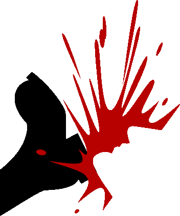
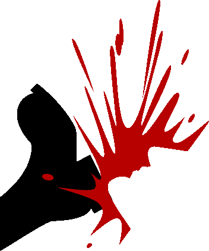

Приложение 1
Рассказы участников, присланные по электронной почте
Я., /Рассказчик - представитель волгоградского панк-движения и потому, говоря о наци, неточно называет их не бонами, а скинхедами. - Ред./ Волжский
Около тридцати скинов с волгоградского района Спартановки и Волжского пришли на «Пожарку»... место тусовки панков в 30 микрорайоне Волжского... и избили цепями и армейскими ремнями двух панков... Пеныча и Шефа, которых положили в больницу... Эти мрази отбили Пенычу печень... он весь жёлтый... Заведено уголовное дело...
3-го января панки собрались мстить фашистам... На улице был пойман активист наци-скин-движения Михалыч... он был немножко напуган и побит...
4-го января стало известно, что скины со Спартановки едут в Волжский... Мы их уже ждали... 84 панка из четырёх разных тусовок Волжского пришли на станцию Трубную... но скины не приехали, а зря... Им бы был мандец... Потом мы все пошли на Дом Торговли, где тусуют скины... но их там тоже не оказалось... После Дома Торговли тридцать пять панков пошли в 18-й микрорайон... нашли подвал, в котором должны были находиться скины... Он был пуст... В это время к подъезду подошли семь нациков... Увидев панков, они побежали прочь... Началось сафари по пустынному району... Скинам удалось скрыться... Подвал был торжественно заколочен жильцом этого дома под дружелюбное улюлюканье злых и весёлых антифашистов...
5-го января панки в количестве 16-ти человек пришли к Дому Торговли и стали бить волжских скинов... около 20-ти человек... среди которых, по нашим сведениям, были 15 волгоградцев... на глазах у милиционеров, сидевших на площади в патрульной машине... Скины побежали в 23-й микрорайон... после этого 8 панков вернулись к Дому Торговли и разогнали оставшихся... Через полчаса, когда скины собрались вместе и попытались дать отпор... площадь 22-го микрорайона была покрыта бегающими скинами и гоняющимися за ними панками... с дубинами и арматурой наперевес... с бросанием бутылок и с шифрованием от ментов... В завершение пять панков остановили у магазина «Заря» семерых наци-скинов, которые выдавали себя за футбольных фэнов... После того, как у одного из них был обнаружен солдатский ремень... весь изнутри исписанный свастиками, кельтскими крестами и СС-овскими черепами... их стали бить... Скины разбежались, потеряв куртку... которую вернули владельцу, нарисовав на ней баллончиком свастику и половой член...
6-го января 23 панка поехали на Спартановку в Волгоград, чтобы найти тех скинов, которые приезжали в Волжский 2-го января... Когда они вышли на станции из электрички, их заметили малолетние скинхеды, которые побежали по дворам собирать старших товарищей... Скинхеды попрятались... а когда панки углубились в район, начались стычки с местными парнями, которые восприняли приезд панков как вызов... После нескольких драк, отогнав местных и наведя шороху на всю Спартановку, панки ушли через гаражи в овраг и уехали в Волжский... В тот же вечер барабанщик хардкор-группы «Беспредел» Димедрол возле Дома Торговли подвергся нападению со стороны двух нациков... Он отбил им голову своей дубинкой... 7-го января в 30-м микрорайоне тремя панками был избит член PHE... В этот же день Дом торговли был расписан граффити антифашистского содержания…
Р., зашифрованный мегаполис
Как-то раз вышли мы прогуляться по славному городу... и заодно погонять при встрече нациков... Нас было около тридцати человек... Маленькими кучками мы двигались по проспекту с обеих его сторон... Сначала прогулка была довольно-таки скучной... так как по дороге как назло мы не встречали ни одной фашистской рожи... Обошли почти все места, где они обычно тусуются... никакого результата... Их как назло нигде не было... И тут поступило предложение зарваться на место их основной тусовки... где обычно тусуются основные... их фюреры... За несколько кварталов до этого места мы запустили туда несколько лазутчиков... для того, чтобы они пробили обстановку... сообщили количество и т. д. ... Через несколько минут мы уже знали их точное количество и месторасположение... Приготовившись – намотав на руки цепи, пряги, у некоторых были даже и молотки – мы двинулись вперед...
Подошли очень грамотно, сзади... Они сидели то ли за клумбой, то ли за пересохшим фонтаном... Мы почти подошли вплотную... Ну тут я уже начал коптить и закричал: «ВПЕРЕД!!!»... Наци, не понимая в чем дело, оглянулись и сразу же пустились в бегство... Но не тут-то было... Моя могучая цепь стремительно приземлилась на головы по крайней мере троих из них... Начался МИТУС... Двоим удалось убежать... Но вот остальные... Я им не завидую... Разгоряченная толпа просто втаптывала их в землю... Короче, было очень жутко!.. Я разгоняюсь и вижу, как один нац открывает ебальник... думаю, ну все, смерть ему... и с разгону долбаю ему прямо в ебач железным ботинком... Блять, ебало так захрустело!.. Как чипсы «Читес»... Тут я услышал: «Братва! Уходим!»... и потихоньку мы начали сваливать... Тут как тут мусора, сирена... тетка кричит: «БОЖАЧКИ!!!ШТО Ж ГЭТА РОБІЦЦА!!!!?»... Мы удаляемся в темноту...
Н., Москва
За два дня до акции проходит планерка, на которой наиболее активные «акционеры» осматривают район будущих событий... Это Арбат... Мы ходим по Арбату... изучаем практически все окрестные переулки... строим планы... Планерка-прогулка длится два часа... причем под довольно сильным дождем, что напрягает и раздражает... Но кое-чего мы надумали... И вот 1 июня, день акции... К 16.00 собираются и фашисты, и антифашисты... Место сбора наци – площадка перед «МакДональдсом» у метро «Смоленская»... Они собираются пройти маршем по всему Арбату... а потом провести митинг около библиотеки им. Ленина... На всё есть разрешение властей...
Антифа дислоцируются между двумя станциями метро и кинотеатром «Художественный»... У одного из наших – мобильный телефон... также ещё один наш человек, тоже с мобилой... он тусуется в районе встречи фашни... Он передает: «Они выдвигаются... их от 50 до 100... с ними 7 милиционеров... пять – в хвосте колонны, двое – впереди»… Такое расположение охранников правопорядка нам как раз и выгодно... Я вообще-то атеист... но должен признать, что если бог или боги существуют... они были к нам благосклонны... У нашей боевой позиции, подземного перехода около кинотеатра «Художественный» – ни одного мента... Народу достаточно, так что мы особо не выделяемся... а, с другой стороны, народу не супермного... так что свободно можем стоять там, где хотим... Погода – тоже самая благоприятная... легкий дождик то затихает, то начинается снова... это позволяет многим из нас стоять в капюшонах, которые закрывают, по крайней мере, часть лица...
Нас чуть меньше двадцати человек... возраст... от чуть более тридцати до чуть менее двадцати лет... И вот колонна неонацистов приближается... заходит в подземный переход... Мы становимся вдоль всего выхода и по краям... Вот нацисты уже метрах в десяти от нас... Кому-то на тупую расистскую голову из небольшого ведерка выливается два литра помоев... большинство наших кидает по противнику яйца... Я лично кинул два... одно пролетело мимо, а вторым я засадил кому-то прямо в табло... где-то между переносицей, лбом и очками... Далее, один из наших заряжает: «Фашизм не пройдет!»... и мы ретируемся... Как написал бы Джон Кинг, автор «Фабрики Футбола»: «Ноги-ноги-ноги!»… Это, конечно, надо прочувствовать самому... если же постараться описать... Но, наверное, стоит заметить, что ощущение такое, будто весь мир вокруг застыл... как в телевизионной рекламе йогурта «Даниссимо»... а ты бегом прорываешься подальше от места событий... Наше отбытие сопровождается протяжным, как коровий рев, воплем одного из нацистов: «Пидоры, бля!!!»… Большинство побежали в метро... но 5 человек, я в том числе, побежали другим путем... Мы перепрыгиваем через метровую оградку... непонятно каким макаром, на абсолютном автопилоте, проносимся через переполненную в час пик машинами дорогу... Через минуты 2-3 мы уже в полукилометре от кинотеатра «ХXX»... По ходу выясняется, что двое забежали в какой-то переулок, а трое, я в том числе, находятся метрах в 200 от XXX... Стоим, переводим дыхание... Примерно через час все подтянулись к станции метро «ZXY»... Там с радостью выясняем, что никто в ментовку не попал, а наци были в таком шоке, что преследования не организовали... Мы берем пиво... тусуемся в теплой компании... обсуждаем акцию и дальнейшие перспективы московского антифашизма... Составляем резолюцию акции, которую подгружаем во всемирную паутину через интернет-кафе...
О., Самара
Всё началось с того, что по городу прошёл слух о концерте группы «Король и Шут» на набережной у «Ладьи»... Примечательно, что дату и время начала концерта никто, естественно, не знал... да и не мог знать... эти слухи не имели под собой ни малейшего основания... Тем не менее, почти за неделю до знаменательных событий у «Ладьи» стала собираться тусовка панков и неформалов... пили пиво... отрывались... кричали: «Давай КиШа»... в общем весело проводили время... Главное было впереди... Опять же по слухам стало известно, что «Короли и Шуты» приезжают 10 мая... причём время начала варьировалось от 17-00 до 19-00... К 18-30 подтянулась и наша группа анархистов, антифа, панков и неферов в составе около 30 человек... Недалеко от предполагаемого места концерта была замечена небольшая группа наци-скинов... Мы остановились в метрах 100 от «Ладьи»... ждали остальных... допивали остатки пива... общались... обсуждали планы на вечер...
В это время скинов набралось человек 20-30... скандируя: «А ну-ка, давайте, пиздуйте отсюда, Россия для русских, Самара для волжан»... выкидывая нацистские приветствия... бритоголовые двинулись к «Ладье»... остановились у подножия памятника... Естественно, тут же начались наезды на мирно тусовавшихся неформалов... несколько человек были избиты... Было ощущение, что находившиеся буквально в двух шагах разрозненные компании панков и рокеров ничего не замечали... или не хотели замечать... Я начал подбивать своих подойти ближе... если завяжется драка, показать этим тупоголовым ублюдкам, что мы думаем о фашизме... Пока все собрались, фашни уже и след простыл... Постояли немного у «Ладьи»... к нам подошёл какой-то нефер... начал рассказывать, что скины дали кому-то люлей... звал найти этих придурков... К этому времени все морально созрели для большой драки... согласившись, мы двинулись по набережной в сторону Алабина... К этому моменту нас было около сорока человек... На полпути от «Ладьи» до улицы Осипенко мы остановились... тот же парень сказал, что сейчас приведёт ещё своих друзей... Кто-то сказал, что фашня собирается на площади Куйбышева... было решено идти туда... Толпа постепенно росла... когда мы двинулись с набережной, я оглянулся... с удивлением, переходящим в ужас, обнаружил, что «вся набережная» двинулась вместе с нами... О численности стихийного антифа-шествия можно было судить очень приближенно... по нашим оценкам было человек 400-500... а может и больше... Колонна растянулась почти на два квартала... Впереди шла девушка с белым лицом, разукрашенным анархической символикой... и с красным флагом с надписью «Король и Шут»... Подойдя к остановке, часть бунтарски настроенной молодёжи набилась в автобус, имевший неосторожность оказаться там в этот момент... Настроение у всех было скорее праздничное, чем агрессивное... поэтому кучка скинов, стоявшая тут же и тупо пялившаяся на происходящее вокруг, как ни странно, осталась нетронутой... Это тем более удивительно потому, что ранее я сам слышал, как именно они, уходя с набережной, обиженно орали: «Пошли все к нашим на Куйбышева»… Так или иначе, мы двинулись пешим ходом по улице Ново-Садовой в сторону предполагаемой тусовки скинов... На глазах у офигевающих прохожих колонна скандировала: «Россия без фашизма», «Бей скинов, спасай Россию», «Скины – лохи», «Бей фашиста прямо в лоб – загоняй фашиста в гроб», «Капитализм – дерьмо», «Все менты – суки», «Король и Шут» и т.п... попутно громя буржуйские витрины, плакаты и рекламные щиты, а также платные таксофоны и всё, что подворачивалось под руку... Самый отвязный из наших устремился в начало колонны и там заводил толпу... за что впоследствии каждый уважающий себя панк считал своим долгом пожать ему руку со словами: «Молодец! Круто зажигал»... когда народ стал пересекать улицу, он выскочил на дорогу и, размахивая металлическим дубьём, выполнял обязанности регулировщика... Не обошлось и без приколов... двое панков, вырвав две трубки из телефонных автоматов, долго и упорно пытались дозвониться друг другу... Одна опешившая старушка, выскочившая из дому, долго допытывалась, кто мы такие и куда идём... когда ей объяснили, что мы идём бить фашистов, ободряюще сказала: «Правильно, так им и надо», и вроде бы успокоилась... В это время шествие попало в поле зрения ментов, которые начали «пасти» колонну... очевидно стуча кому надо и вызывая подкрепление... Когда колонна подошла к площади Куйбышева, там уже находились человек 100-150, которых издали приняли за скинов... однако при ближайшем рассмотрении поняли, что это свои... Начались братания, песни «Короля и Шута»... Шествие плавно переросло в стихийный митинг... По моим наблюдениям, народу было не многим меньше, чем на прошлогоднем митинге за бесплатное образование и против школьной реформы... Когда подтянулись последние митингующие, мы с удивлением обнаружили, что скины... приблизительно человек 10-15... стояли буквально в метрах 30 от нас на углу ДК Куйбышева...
Антифа-туса к этому времени, похоже, уже забыла о цели своего визита и просто весело и зажигательно куражилась на новом месте... мы же растеклись по компаниям собирать народ на драку... Поняв, что это бесполезное занятие, мы решили действовать своими силами... Человек десять наших ринулись на скинов, которые к этому времени начали тихо расходиться... Выбрав того, кто поздоровей, я побежал на него... Как ни странно, тот не сдрейфил... а по-боксёрски встал в стойку, собираясь, по-видимому, защищаться... Я, подлетая, пробил ему с правой в челюсть... он попытался ударить меня... в этот момент подбежал второй анарх и дал фашу по почкам... тот согнулся пополам... я с ноги дал ему в живот... затем подбежал ближе и попытался его завалить... В суматохе мой брат брызнул мне баллоном прямо в глаза... я ошалел секунд на пять... но потом вроде оклемался... сзади меня около 8 панков лет 14-15 месили ещё одного бритоголового... убедившись, что бьют кого надо, я с ещё несколькими панками побежал за драпающими фашугами... Другая часть наших настигла фашей около центрального входа в ДК... Кто-то из фашни получил железной трубой по рёбрам... кого-то просто лупили почём зря... параллельно, с наци, которые вдруг резко отреклись от своих убеждений, проводилась разъяснительная работа о том, что фашизм – дерьмо, и он не пройдёт... Тем временем мы, пробежав метров 200... преследуя скинов... поняли, что фашуги слишком далеко, а нас слишком мало... и пошли назад на площадь... Там всё выглядело так, как будто ничего и не произошло... только отпизженные нацики толпились у подъехавших ментов, чувствуя себя в их обществе более чем комфортно... Мы обдумывали, что делать дальше... было решено идти на «стену»... место, куда, предположительно, и включили съебатор уцелевшие фаши... К этому времени менты начали оцеплять площадь и разгонять всех дубьём... толпа ринулась к остановке около ОДО... достаточно большая часть человек в 100 почему-то отделилась и ушла направо... Озверевшие менты с криками: «Вы чё, ахуели, суки» – начали избивать демократизаторами всех подряд... особенно досталось подрастающему поколению и девчонкам... Большая часть разогнанной толпы собралась на остановке... менты начали подъезжать и туда... Кто-то крикнул: «Все на «стену»!»... мы втроём побежали туда, но и там дорогу перекрыли менты... фашуга в ментовской форме выбежал на тротуар и так дал дубьём по спине 13-летнего панка, что дубьё отлетело метра на три... мент грязно выругался, не сразу поняв, куда делось его садо-мазо орудие... потом нашёл и взялся за старое... Когда мимо этого ублюдка пробегала бледнолицая девчонка с уже легендарным флагом «Король и Шут», он сломал древко пополам и выкинул его со словами: «Пиздуй отсюда, сука!»... Небольшая группа... примерно человек двадцать... всё же прорвалась к ближайшему перекрёстку... подъехавшие менты, больше напоминавшие молочных поросят, лениво переваливаясь с ноги на ногу, начали наивно орать: «Идите, бля, сюда все быстро!»... Странно, но несколько особо законопослушных панков подошли... их обыскали и, возможно, задержали... Мы в это время уже шли обратно на площадь искать своих... так как из затеи со «стеной» ничего не вышло... Менты разогнали практически всех... тут и там ревели сирены ментовозов... отдельные группы панков тусовались в прилежащих скверах... Мы пошли на автобус... встретили большую часть наших... весело доехали до Дома... стали дожидаться остальных... Как выяснилось, одного из наших менты всё-таки повязали, аргументируя свои действия тем, что «нам сейчас КОЗЛЫ нужны»... сразу начались угрозы... обещания длительных сроков заключения... обыскав парня и отобрав ремень и напульсник, суки попытались впарить ему нож... но наш не поддался на провокации, объяснил ситуацию и вскоре был отпущен... Когда подъехала вторая часть наших, оказалось, что не хватает троих... парня и двух девчонок... Беспокойство усиливалось тем, что перед стычкой с фашистами я отдал спортивную сумку, в которой кроме всего прочего была и анархистская литература одной из девушек... Но всё обошлось... минут через сорок они подъехали... Все были в приподнятом настроении... поделившись впечатлениями и обсудив произошедшее, разошлись по домам... Менты как всегда были на высоте... Позже выяснилось, что одного парня искалечили в участке... ему переломали рёбра... другому панку-подростку дубьём заехали в основание черепа... несколько человек были избиты... И это только то, что видел я или мои друзья... реальное количество пострадавших, вероятно, больше на порядок... Короче: «Fuck the Police!»...
Рустам, Тюмень
Рассказываю со слов редскина Мумика... у него вчера произошел незапланированный антифа-вечер прямого действия...
Вечером 15 мая три мирных еврея... в том числе Мумик из АД и RASH.. вышли из тюменской синагоги и оказались посреди потока фашни, идущей с концерта «Короля и шута»... у нас «Король и шут» и фашисты – близнецы-братья...
Несколько наци притормозили... и один... «самый смелый»... размахивая цепью, начал: «Вы чё, евреи?!»… Молодой фашни к тому времени собралось человек 20-25... и этот несчастный всерьез полагал, что прав всегда тот, кого больше... Здесь его подвело отсутствие исторических знаний о революционном движении... прав не тот, кого больше, а тот, кто владеет оружием пролетариата – булыжником... а именно кирпичем... Молодые евреи читали когда-то Тору... и помнили историю о том, как то ли их предки, то ли вавилоняне изобрели кирпичи, чтобы построить Вавилонскую башню... Башню они не построили, и неиспользованные кирпичи с тех пор валяются там и сям по земле... Эти самые кирпичи и схватили с земли сыны израилевы, перевоплотившись в бойцов RASH... Размахивая кирпичами и сотовым телефоном... телефон, разумеется, был не у Мумика... Мумик сейчас беден как Лазарь... с боевым кличем: «ПРОБЛЕМ ХОТИТЕ, СУКИ!»... антифашисты кинулись на офигевших бритоголовых филистимлян... обратив их в бегство и беспощадно преследуя... Но нацистов вокруг было очень много... вообще много... вся фашистская Тюмень, наверное, почтила своим вниманием дорогого ей «Короля и шута»... Разобравшись, что немногочисленные то ли евреи, то ли полумифические RASH бьют бонхедов на их собственном празднике жизни... вся наличная фашня Тюмени контратаковала... Антифа бросились в отступление к площади Ленина... на открытое пространство... Площадь Ленина – это центральная площадь... небольшое заасфальтированное пространство перед Обкомом... Администрацией области...  В принципе, как раз там и тусуются фашисты... хочешь надолбать фашисту в Тюмени – иди на площадь... выбирай любого... да еще там разные панки... но там все фаши ходят «смирные»... центральная площадь, все-таки... Менты, заприметив массовые беспорядки, налетели на сражающихся и стали хватать всех без разбора... Забрали кучу непричастной фашни... ха-ха... непричастной фашни не бывает... Набили всю ментовку... Главные фашисты, как обычно, смылись... Но рожи их теперь преобразованы в фотороботы... Ха-ха!… Посидят на нарах... Уроды... Евреи наши сидели в ментовке до часу ночи... но они прошли как потерпевшие и давали показания... Фашисты, наверное, до утра там сидели, я не знаю... Хоть какое-то уголовное дело все равно должны завести... В итоге, фашисты уже отгребли хорошо... Одному из антифа в схватке порвали джинсы... еще кто-то пропустил несколько ударов ногами... может, он же самый… А сегодня будет массовое истребление тюменской фашни... если те опять не убегут... антифа-бойцы устраивают тотальный погром на площади Ленина... Будут «демократизированы» все обнаруженные фаши, замеченные во вчерашних событиях... Но скорее всего, они исчезнут на некоторое время...
В принципе, как раз там и тусуются фашисты... хочешь надолбать фашисту в Тюмени – иди на площадь... выбирай любого... да еще там разные панки... но там все фаши ходят «смирные»... центральная площадь, все-таки... Менты, заприметив массовые беспорядки, налетели на сражающихся и стали хватать всех без разбора... Забрали кучу непричастной фашни... ха-ха... непричастной фашни не бывает... Набили всю ментовку... Главные фашисты, как обычно, смылись... Но рожи их теперь преобразованы в фотороботы... Ха-ха!… Посидят на нарах... Уроды... Евреи наши сидели в ментовке до часу ночи... но они прошли как потерпевшие и давали показания... Фашисты, наверное, до утра там сидели, я не знаю... Хоть какое-то уголовное дело все равно должны завести... В итоге, фашисты уже отгребли хорошо... Одному из антифа в схватке порвали джинсы... еще кто-то пропустил несколько ударов ногами... может, он же самый… А сегодня будет массовое истребление тюменской фашни... если те опять не убегут... антифа-бойцы устраивают тотальный погром на площади Ленина... Будут «демократизированы» все обнаруженные фаши, замеченные во вчерашних событиях... Но скорее всего, они исчезнут на некоторое время...
Если так, то город временно взят... Тайм-аут...